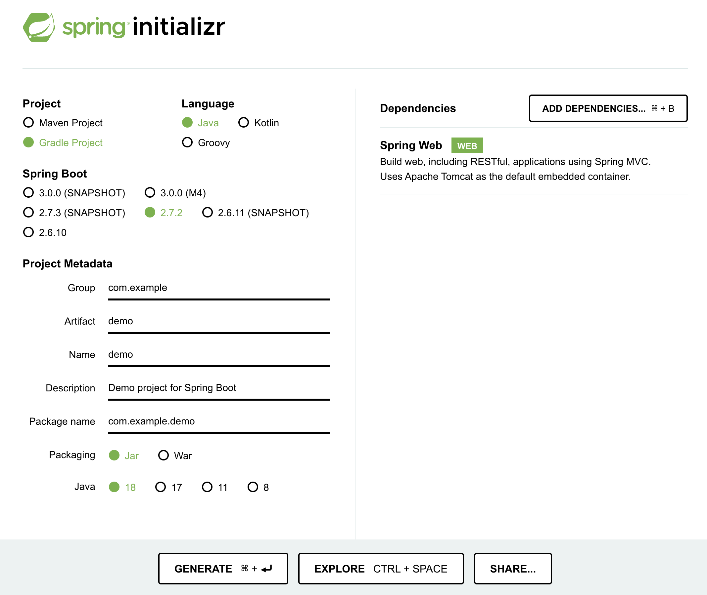

2022년 7월 25일
특정 (서버) 애플리케이션을 도커(Docker) 컨테이너로 실행할 수 있도록 도커 이미지를 만드는 것을 도커라이즈(Dockerize)한다고 말하는 것 같습니다. 아마도 사전에 등재된 단어는 아니겠지만 영어권 개발자들이 쓰는 말인가 봅니다.
우리말로 “도커라이즈” 그대로 쓰기 찜찜하다면, 내 서버 애플리케이션을 “도커 이미지로 만든다”라고 표현하면 어떨까 합니다.
이하 문서는, 도커에 대한 기반 지식이나 경험이 적은 분들도 이해하며 따라 하기 좋도록 적어보겠습니다.
내 자바 스프링 부트 애플리케이션을 도커 컨테이너로 실행할 수 있게 만든다고 해봅시다.
Amazon EC2 같은 VM 인스턴스에서 자바 애플리케이션을 실행하던 방식에서, EKS 등의 도커 클러스터 환경으로 이동하려면, 가장 먼저 해야 할 일입니다.
내 애플리케이션을 실행할 도커 이미지를 만들고 나면, 그 이미지를 바탕으로 도커 컨테이너를 여럿 실행할 수 있습니다. Java에 비유하자면, 도커 이미지가 자바 클래스인 셈이고, 도커 컨테이너가 클래스를 new로 생성한 오브젝트인 셈입니다.
| Docker | Java 비유 | 리눅스 실행 파일과 프로세스 비유 |
|---|---|---|
| 도커 이미지 | 클래스 | 실행 파일 |
| 도커 컨테이너 | 오브젝트 | 실행 중인 프로세스 |
실제로는, 도커 컨테이너 안에는 여러 (리눅스) 프로세스가 실행되지만, 일단 간단하게는 도커 컨테이너가 하나의 논리적인 프로세스라고 여겨봅시다.
마침, 스프링 공식 사이트 가이드 문서 중에 Spring Boot Docker라는 문서가 잘 정리돼 있습니다. 이 문서에 있는 내용 중 기본만 요약해서 언급하며 정리해 보겠습니다.
도커 이미지를 만들기에 앞서, 0번 과정으로, Java VM으로 독립 실행 가능한 상태를 만들어야 하겠습니다. 컴파일한 *.class 파일들과 필요한 *.jar 라이브러리 파일들을 나열해 준비해도 되겠지만, 가장 좋은 건, 딱 하나짜리 jar 파일로 묶어두는 것이 좋겠죠.
스프링 부트 애플리케이션이라면, 기본적으로 maven 기준이라면
mvnw install으로, gradle 기준이라면
gradlew build로 필요한 .jar파일을 만들 수
있습니다.
만약, 이미 개발 중인 JAR 파일이 없다면, 이 문서를 따라 하기 위한 목적으로, 스프링 부트 데모 프로젝트를 만들어 보겠습니다. (테스트할 JAR 파일이 있다면, 이 부분은 건너뛰어도 좋겠습니다)
https://start.spring.io/에 방문하면, 웹 인터페이스로 스프링 부트 프로젝트를 초기화할 수 있습니다.

여기서는, 임의로, 빌드 툴은 gradle, 언어는 Java로, 부트 버전은 2.7.2, 프로젝트 명은 demo, 그리고, 패키징은 Jar 파일, 마지막으로 Java 버전은 18을 선택했습니다. 의존성(Dependencies) 항목에 스프링 웹(Spring Web)을 추가했습니다.
이렇게 선택한 상태에서, 화면 하단의 Generate 버튼을
누르면, demo.zip이라는 압축 파일을 다운로드하게 됩니다.
적당한 작업 디렉터리에, 방금 다운로드한 demo.zip을
풀고,
$ ./gradlew build라고 빌드 태스크를 실행하면,
build/libs/demo-0.0.1-SNAPSHOT.jar라는 JAR 파일이
만들어집니다. 그러면,
$ java -jar build/libs/demo-0.0.1-SNAPSHOT.jar로컬 환경에서 위 명령어를 실행할 수 있습니다.
자, 그럼 이제까지 준비한 JAR 파일을 기준으로 도커 이미지를 만들어보겠습니다.
도커 이미지를 어떻게 만들지 기술하는 파일이 필요한데요, 기본 파일명은 Dockerfile입니다.
FROM amazoncorretto:18
VOLUME /tmp
COPY build/libs/demo-0.0.1-SNAPSHOT.jar app.jar
ENTRYPOINT ["java","-jar","/app.jar"]선호하는 텍스트 에디터로, 위와 같이 작성해서 Dockerfile라는 파일로 저장합시다.
첫 줄에 있는 FROM은 어떤 이미지를 바탕으로 시작할 것인지를 선언하는 것입니다. 도커 허브에 등록된 어떤 이미지를 바탕으로 시작해도 되지만, 기본적으로는 도커 공식 이미지들 중에 선택하면 안전하겠습니다. (스프링 부트 도커 공식 가이드 문서에는 openjdk:8 를 바탕으로 하라고 되어있지만, 이 글을 작성하는 현재 기준, 아쉽게도 해당 이미지는 DEPRECATED 되어있습니다)
Amazon Corretto 이미지는, AWS에서 공식 지원하는 이미지이고, 무료이며,
OpenJDK 호환이므로, 믿고 쓸 수 있겠습니다.
amazoncorretto:18에서 콜론 앞부분, 즉
amazoncorretto가 이미지 이름이고, 뒷부분 18이
버전입니다.
도커 허브에서 Amazon Corretto를 찾아보면, 상세한 설명과 함께, 지원하는 버전들을 찾아볼 수 있습니다.
| JDK버전 | Docker 이미지 | 보안패치 업데이트 지원 |
|---|---|---|
| JDK 8 | amazoncorretto:8 | 최소 2023년 6월까지 |
| JDK 11 | amazoncorretto:11 | 최소 2024년 8월까지 |
| JDK 17 | amazoncorretto:17 | … |
| JDK 18 | amazoncorretto:18 | … |
필요한 JDK 버전에 따라서, 도커 이미지 버전을 선택하면 되겠습니다. 만약 11 버전을 쓴다 하더라도, 최소 2024년 8월까지는 보안 업데이트를 제공하겠다고 명시돼 있으므로, 당분간 안심하고 쓸 수 있겠습니다. (이후 버전들도 최소한 그 이후까지는 하겠다는 뜻일 테니, 18 버전을 쓰면 더 안심이 될지도 모르겠습니다)
FROM amazoncorretto:18
VOLUME /tmp
COPY build/libs/demo-0.0.1-SNAPSHOT.jar app.jar
ENTRYPOINT ["java","-jar","/app.jar"]세 번째 줄에 있는 COPY는, 도커 이미지를 빌드하는
호스트에 있는 로컬 파일을, 도커 이미지 안에 복사하는 명령어입니다. 즉,
gradle 등으로 빌드한 JAR 파일을 도커 이미지 안에 복사해 넣겠다는
의미입니다. 만약, 추가로 다른 JAR 파일이나, 실행할 때 필요한 파일들이
있다면, 마찬가지로 COPY 명령어를 사용해서 복사할 수 있습니다.
마지막, ENTRYPOINT는 도커 컨테이너를 실행할 때 실행되는 프로세스와 실행 파라미터들을 나열한 것입니다. 만약 필요한 파라미터가 많아서, 이 명령어가 길어진다면, 셸 스크립트를 만든 뒤, COPY 명령어로 도커 이미지 안에 복사해 넣고, 그 셸 스크립트를 실행하도록 지정하면 되겠습니다.
docker build를 써서, 이제까지 기술한 Dockerfile
기준으로 이미지를 만들어 낼 수 있습니다.
$ docker build -t hatemogi/demo .-t옵션은 빌드할 이미지의 이름입니다. 여기서는
hatemogi/demo라고 지정했습니다. .은 이미지
빌드 작업을 할 기준 디렉터리가 현재 디렉터리임을 지시하는 것이며,
여기에서 Dockerfile도 찾고, COPY 할 때 상대 경로에 접근하는
기준이 되기도 합니다.
여기까지 진행했다면, 도커 이미지가 로컬에 준비된 것이고, 이 이미지를 기준으로 새 컨테이너를 실행할 수 있게 됩니다.
$ docker image ls
REPOSITORY TAG IMAGE ID CREATED SIZE
hatemogi/demo latest 954d2adb5a88 3 hours ago 513MBdocker image ls라는 커맨드로, 로컬 도커 저장소에 있는
이미지를 조회해보면, 3시간 전에 해당 이미지가 만들어졌고,
513MB의 크기이며, 이미지 ID는
954d2adb5a88라는 것을 알 수 있습니다. 최종 생성된 이미지에
latest 태그가 붙게 됩니다. 마치 git tag
커맨드를 쓰는 것처럼, docker image tag 커맨드로 임의의
태그를 지정할 수도 있습니다.
일단은, hatemogi/demo라는 이름으로 “도커 이미지가 잘
만들어졌구나”하는 확인만 하면 되겠습니다.
이제 드디어 마지막 단계입니다. 준비한 도커 이미지를 이용해서, 새로운 도커 컨테이너를 실행해보겠습니다.
$ docker run -ti -p8080:8080 hatemogi/demodocker run이라는 명령어로 실행하게 되고, 옵션으로
-ti를 주면 현재 터미널과 도커 컨테이너의 실행 프로세스의
터미널을 연결해줍니다. 즉, 마치 현재 호스트에서 도커 컨테이너 안의
프로세스를 실행한 것처럼 보이게 됩니다. 실제 서버에서 운영할 때는, 이
옵션을 주지 않게 되겠지만, 지금은 로컬 개발환경에서 확인하는 단계이므로,
이 옵션을 주어 실행하도록 합니다.
-p옵션은 호스트의 포트와, 컨테이너의 포트를 연결하는
옵션입니다. 8080:8080이라고 지정하면, 호스트의 8080 포트를,
컨테이너 안에서 열린 8080 포트로 연결해줍니다. 이렇게 호스트의 포트와
컨테이너의 포트 번호가 같을 경우에는 -p8080이라고만 주어도
됩니다.
여기까지 실행하면, 현재 터미널에 스프링 부트 애플리케이션이 출력하는 로그가 보이고, 도커 컨테이너를 실행한 호스트의 8080 포트에 접근하면, 우리가 준비해서 도커 컨테이너 안에 실행한 스프링 부트 애플리케이션에 연결됩니다.
여기까지, 스프링 부트 웹 앱을 도커 이미지로 만들어서 실행하는 방법까지 정리해보았습니다. 이제 이 이미지를 Amazon ECR에 올린 다음, EKS등의 도커 컨테이너 실행 환경에서 운용할 준비가 되었습니다. 해당 내용은, 나중 글에서 살펴보기로 하겠습니다.
감사합니다.